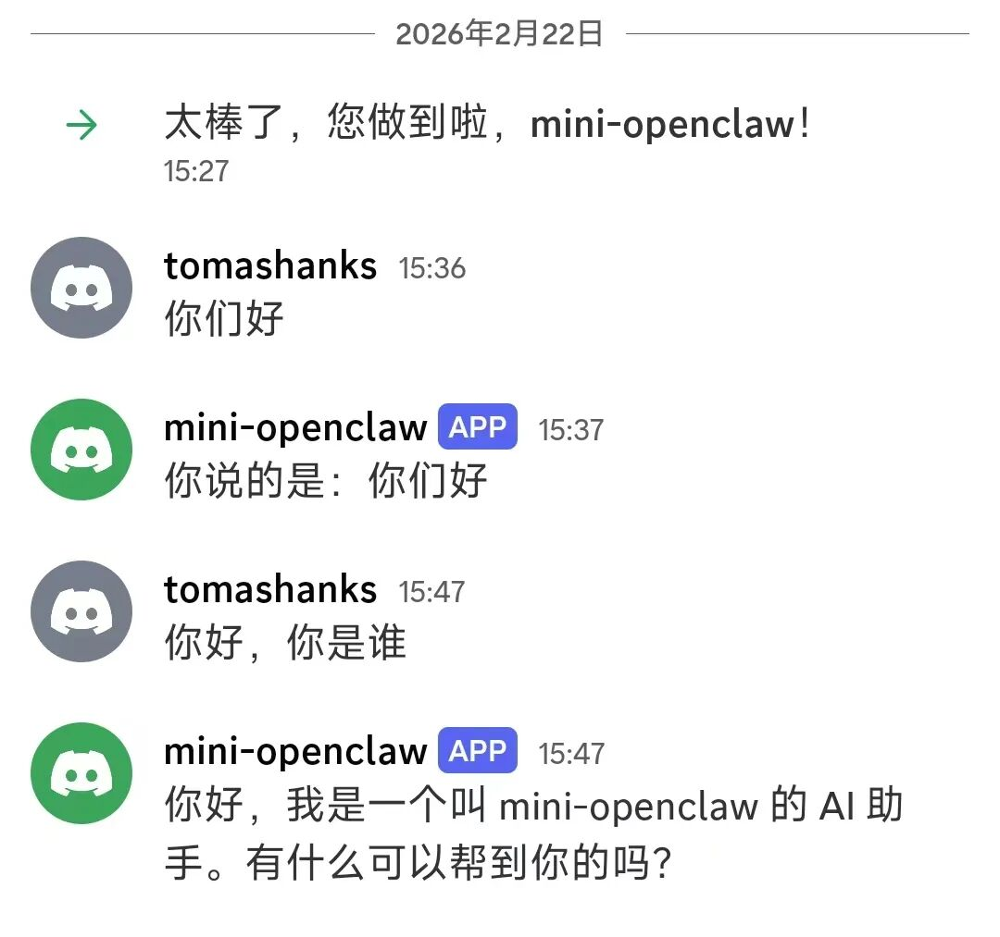

先搞清楚它到底是什么
在动手之前，我花了点时间搞清楚 OpenClaw 的核心逻辑，不然根本不知道要做什么。
它的本质其实不复杂：一个运行在你电脑上的程序，作为"中间人"把你的聊天消息转发给 AI 模型，再把 AI 的回答发回给你。同时它还能记住你们之间聊过什么，并且支持各种插件扩展功能。
用图来表示就是：
你的消息 → 聊天平台 → 中间程序 → AI 模型↕记忆 + 技能插件
想清楚这个，我就知道要做哪几件事了：连接聊天平台、接入 AI、实现记忆、做插件系统。
选择聊天平台
部署原版 OpenClaw 的时候我选择接入到飞书，这个过程我比较熟悉了。在打造自己的迷你版 OpenClaw 时，我决定换一个聊天平台。
查资料，发现微信的接入难度比较大，而且风控比较严，容易被封账号，所以我暂时放弃。
想了一下，决定选用国外的聊天平台做实验，这样更好一些，因为平时用得少，账户粘性不大，即使出了问题也不心疼。
我最后选择 Discord，它的 Python 支持很好，API 也简单。
搭环境
正式写代码之前，得先把开发环境搭起来。这一步听起来简单，但对我这种新手来说细节很多。
首先是安装 Python。装好之后，在终端输入 python --version，看到版本号就说明成功了。
接下来是创建项目文件夹和虚拟环境——给这个项目单独开一个"隔离空间"安装依赖库，不会和电脑上其他项目混在一起。
mkdir mini-openclawcd mini-openclawpython -m venv venvvenv\Scripts\activate
最后一行激活虚拟环境，成功的标志是终端最前面会出现 (venv) 字样。这个细节我后来忘记过一次——打开新终端直接运行程序，报错说找不到 discord 模块，折腾了一会儿才想起来虚拟环境没激活。
然后安装三个库：
pip install discord.py openai python-dotenvdiscord.py 用来连接 Discord，openai 用来调用 AI 模型，python-dotenv 用来安全管理 API Key——把密钥存在单独的 . env 文件里，不会被误传到网上。
整个环境搭建过程大概花了半小时，中间有几次报错，但都是路径写错或者漏了某个步骤这类低级错误。
开始写代码
搭建好环境之后，第一段代码很简单，就是让机器人上线，然后把我的话原样复述。（注：所有代码均由AI生成）
async def on_message(message):if message.author == client.user:returnreply = await gateway.handle(message.author.name, message.content)await message.channel.send(reply)
当我在 Discord 发了"你们好"，然后看到机器人回复"你说的是：你们好"的那一刻——
我盯着屏幕看了好几秒。
那种感觉很难描述，有点像第一次骑自行车成功的瞬间。

接入 AI
接下来要接入 AI 模型，让机器人真正"智能"起来。
刚开始选的是 OpenAI 的 GPT，结果遇到了国内网络的老问题——访问不稳定，程序卡死，没有报错也没有回复，只是静静地挂在那里什么都不做。
排查过程挺折磨的。加了调试日志，发现消息是收到了，但卡在调用 API 那一步。试了配置代理，时好时坏。
最后换成了 DeepSeek，国内直连，改了两行代码：
# 改之前self.client = OpenAI(api_key=...)# 改之后self.client = OpenAI(api_key=os.getenv("DEEPSEEK_API_KEY"),base_url="https://api.deepseek.com")
重启之后……又报错了。
Error code: 402 - Insufficient Balance账户余额不足。充了钱，再重启。
终于成功了。
最让我意外的一个 bug
整个过程里有个插曲让我印象特别深。
有一段时间机器人上线了，但就是不回复我，终端也没有任何报错。我检查了代码，没问题；检查了配置，没问题；加了调试日志，发现on_message 根本没有被触发——
机器人收不到任何消息。
原来啊，是我在用手机发消息，而手机没开代理，消息根本没发出去——Discord 截图里有一行红字"发送消息失败"，我完全没注意到。
换成电脑发消息，立刻就通了。
这个 bug 和代码一点关系都没有，但我排查了很久。
最终成果
我的 mini-openclaw 实现了这些功能：
在 Discord 里实时收发消息
接入 DeepSeek AI，能真正理解和回答问题
记忆功能，记得住我们之前说过什么
插件系统，用
/天气 城市名或/清空这样的指令触发特定功能
项目结构如下：
mini-openclaw/├── .env # 存 API Key├── main.py # 程序入口├── gateway.py # 核心控制器├── memory.py # 记忆模块└── skills/ # 技能插件